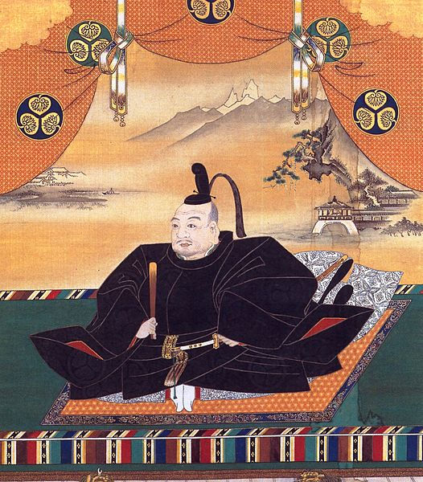

Ieyasu was the first Shōgun from the line of Tokugawa. He was the first of 15 successors ruling Japan from 1600 until 1867. In this article, we explore how a relatively low-ranked aristocrat could find his way to the very top of the Japanese feudal system.
The Tokugawa was an age-old clan (a Japanese province ruled by hereditary landords/Daimyō)
Birth
Ieyasu was born in 1543 (died 1616) and made a lasting impression on Japan. The masterful strategist that Ieyasu later became was shaped since the age of 5, when he sat through struggle and the questionability of his survival.
Parents
Ieyasu’s Parents were young in modern terms (Father: 17 | Mother: 15). Ieyasu’s grandfather was Matsudaira Kiyoyasu, a lord who enjoyed military successes, like Ieyasu would do himself 60 years after his grandfather’s passing.

A portrait of Ieyasu as the first Tokugawan shogun.
Name
According to tradition, the man we know as Ieyasu was named Matsudaira Takechiyo at birth; in name of his paternal lineage. The heir to the Matsudaira clan underwent some more name changes before he became ‘Ieyasu’.
Struggle
A life full of struggle began soon for Matsudaira Takechiyo [Ieyasu], as he was kidnapped by the rivalling Oda clan when he was nearly five. They made father (Matudaira) Hirotada choose between betraying his allies, the Imagawa clan or lose his son.
Kidnapped
Despite Hirotada choosing the military allies over his son, the Oda clan spared Ieyasu’s life. It was an unexpected and seemingly small decision, but one that changed Japan’s history for good.
Just after the Oda clan’s ultimatum, they bribed Hirotada’s vassals to kill him, and they succeeded in that.
The start of Ieyasu's career
In the aftermath of Hirotada’s death, the allied Imagawa clan forced the Oda to free Ieyasu. They hoped he could become a useful ally once he became of age. 3 years after coming of age, at a mere 15 years, Ieyasu was allowed to lead the siege of Terabe (1558). Soon after, the Siege of Odaka followed and the military tactician Ieyasu started paving his way into history.